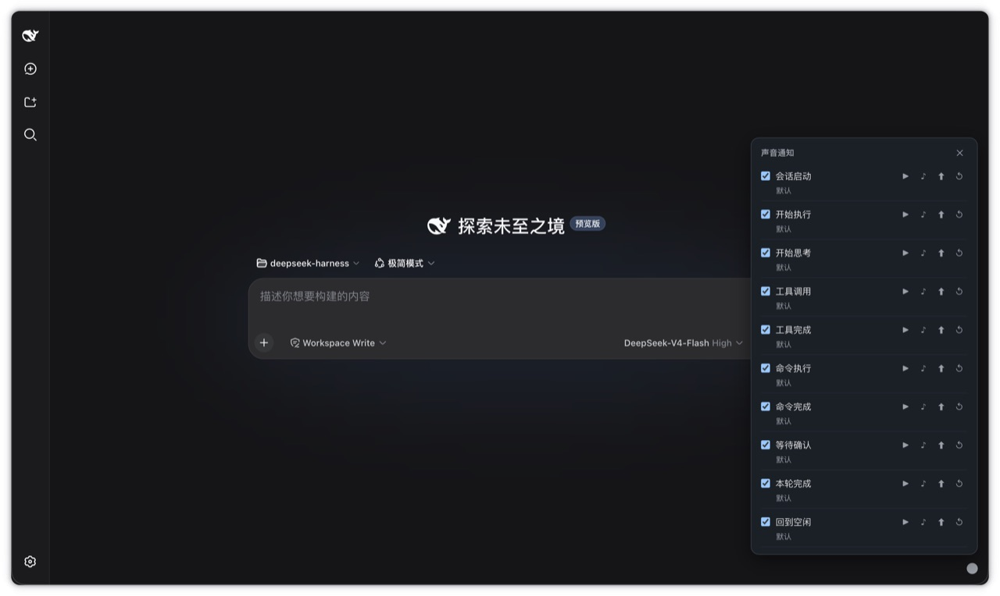

A distinct bell for every lifecycle event, plus a breathing status dot that tells you what your Agent is up to. No audio files — every bell is synthesized in real time with the Web Audio API, and each event can be swapped for your own sound.

In the corner: the breathing status dot. Every step: its own bell.
One small plugin, three small things: distinct bells, your own sounds, and a breathing status dot.
Startup, thinking, tool calls, command done, waiting on you… each event sounds different, so you can follow progress with your ears.
Click the little dot: preview, upload your own audio file, or reset to default. Your replacement sticks and survives reload.
All bells are synthesized on the fly — zero audio assets, a negligible footprint, fully offline, and pitch/rhythm tunable via config.
It doesn't interrupt, doesn't pop up, doesn't add text — it just quietly keeps you company.
Same recipes and rendering logic as the plugin runtime (real-time Web Audio synthesis, no audio files). Volume 0.7, the default masterVolume.
From a DeepSeek Harness source checkout:
pnpm dsh plugin --profile bell add github:Laplace-bit/dsh-bell-notify
If dsh is already on your PATH:
dsh plugin --profile bell add github:Laplace-bit/dsh-bell-notify
The first add is expected to fail: git install has to run the prepare script, and pnpm ≥10 blocks it until you allow it. Open ~/.dsh/profiles/bell/pnpm-workspace.yaml, add the onlyBuiltDependencies snippet pnpm printed, then run the same add again.
Start it:
pnpm dsh --profile bell
Open the page, click anywhere once (browser autoplay policy unlocks audio), then run any task — the sounds and the dot come alive together.
Remove it:
pnpm dsh plugin --profile bell remove dsh-bell-notify
Every move the Agent makes rings once, and each one sounds different. Try them all live above.
| Event | Default bell | Feels like |
|---|---|---|
| Session start | startup | A soft upward sweep, like powering on |
| Agent start | click | A short "ding", we're off |
| Thinking | notify | A gentle single note, settling in |
| Tool call | tick | A crisp metallic "ta-ta" |
| Tool done | drop | A low settle, wrapping up |
| Command run | beep | A short beep, terminal-flavored |
| Command done | rise | A rising two-note "done" |
| Waiting for you | alert | A high triple-chirp, look here |
| Turn complete | success | A rising major chord, satisfying |
| Back to idle | confirm | A single note drifting down, quiet again |
error and failure are built in too, off by default — wire them up in config if you like.
Edit the profile's cordis.patch.yml (Cordis validates and fills defaults at load):
| Option | Default | Description |
|---|---|---|
enabled | true | Master switch |
masterVolume | 0.7 | Master volume 0-1 |
muteAll | false | Mute, but the dot keeps working |
maxQueue | 8 | Wait-queue capacity |
maxConcurrent | 3 | Simultaneous sounds (1 = serial) |
defaultCooldown | 1000 | Global cooldown fallback (ms) |
statusRevertMs | 1000 | Transient status auto-revert (ms) |
showStatusIndicator | true | Show the corner status dot |
Sound toggles and custom-sound replacements live in browser local storage (localStorage + IndexedDB) — click the dot to change them, applied instantly and kept across reloads.
No. It's a community plugin for DeepSeek Harness (dsh), MIT-licensed, not part of the official distribution.
Most likely the browser autoplay policy — after the plugin loads you need to click the page once to unlock audio.
Yes. Set showStatusIndicator: false; sounds keep working.
Bytes in browser IndexedDB, event-to-file mapping in localStorage. All local — nothing is uploaded anywhere.